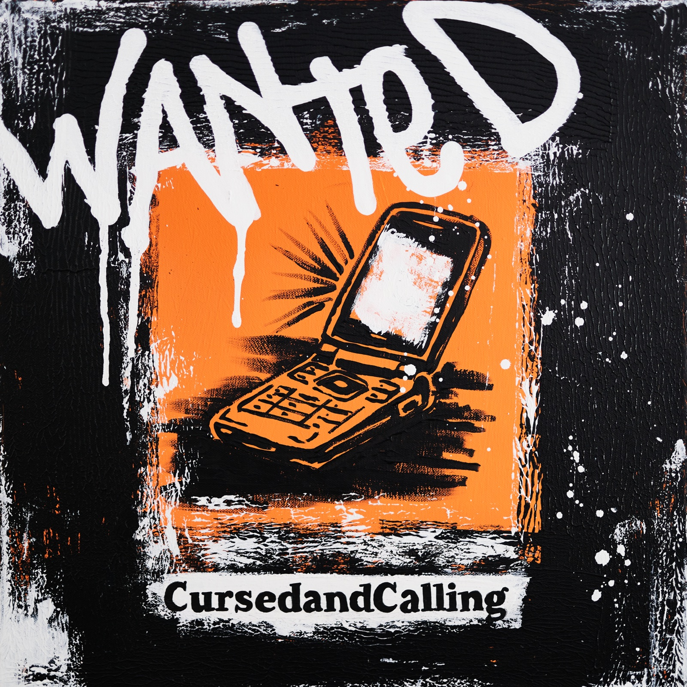

Review
Cursed and Calling – Wanted

WOHA! Willkommen beim Post-Punk!
Wobei Cursed and Calling selbst Post-Hardcore dazu sagen. Ich bin also schon bei der Begrüßung falsch abgebogen. Fängt gut an.
Vor knapp zwei Wochen hatten wir hier diese seltsamen orangefarbenen Flyer. Eine Telefonnummer, ein QR-Code und die Frage, wer zum Fick hier eigentlich seine Nummer aufhängt. Die Zettel tauchten in mehreren europäischen Städten und sogar New York auf.
Inzwischen wissen wir es: Cursed and Calling aus Graz stecken dahinter. Seit dem 23. Oktober ist der dazugehörige Song „Wanted“ offiziell draußen.
Also hören wir doch mal, was sich hinter dem ganzen Theater verbirgt.
Und verdammt, das gefällt mir!
Schon die Geschwindigkeitswechsel und Breaks machen die Nummer interessant. Zwischendurch muss ich ausgerechnet an Oasis denken. Was musikalisch irgendwie völliger Blödsinn ist, denn damit hat das hier herzlich wenig zu tun. Besser bekomme ich Banause diesen Eindruck allerdings nicht beschrieben.
Seit ich wieder häufiger bei meinen Freunden von Hotfilter reinhöre, habe ich ohnehin erneut einen Hang zu diesem Sound entwickelt. Bei „Wanted“ kommt noch etwas dazu: ein Rhythmus, der mich stellenweise an The White Stripes erinnert, und diese dezenten Ausraster, die dem Song verdammt gut stehen.
Wobei auch dieser Vergleich nicht so richtig passt. Ich hoffe, ihr hört euch die Nummer trotzdem an. Als musikalischer Wegweiser bin ich heute offenbar nur bedingt zu gebrauchen.
Textlich bleibt bei mir vor allem dieser wiederkehrende Wunsch hängen, jemanden anzurufen. Unbedingt, am besten sofort. Gleichzeitig fällt immer wieder dieses „I have to go“. Mehr möchte ich aus den bruchstückhaft verständlichen Zeilen gerade nicht herauslesen.
Und dann wäre da noch das Musikvideo.
Das Ding ist richtig gut gemacht.
Schnelle Schnitte, sparsame Effekte und eine Optik, die mich an Musikvideos aus den Achtzigern erinnert. Nur eben modern umgesetzt. Dazu werden immer wieder Textzeilen eingeblendet. Fast schon ein Lyric-Video, sofern man schnell genug lesen kann.
Das gefällt mir fast genauso gut wie der Song selbst.
Ich werde „Wanted“ wohl meinen Kollegen von „Prost Punk – der Post-Punk-Podcast“ vor die Füße werfen müssen. Vielleicht können die mir erklären, warum ich bei dieser Nummer ständig bei Oasis und The White Stripes lande.
Und diese bekloppte Werbeaktion verdient zum Schluss auch noch einmal ein paar Worte.
Während sich andere Bands mit ihrem nächsten Streaminglink durch die sozialen Netzwerke quälen, lassen Cursed and Calling Zettel in mehreren Ländern aufhängen und machen den Song vorab übers Telefon hörbar. Wer nicht anrufen möchte, kann das Ganze auch kostenlos im Browser ausprobieren. Ohne eigene Nummer. Man muss für diesen Quatsch also nicht einmal mit fremden Menschen reden.
Schön bescheuert.
Großartiger Song, großartiges Video und eine herrlich altmodische Idee, um auf beides aufmerksam zu machen.
Ich bin mehr als nur begeistert.
Hören und weitergucken
„Wanted“ – Musikvideo · Spotify · Alle Streamingplattformen
Cursed and Calling – Website · Instagram · Die Telefonaktion